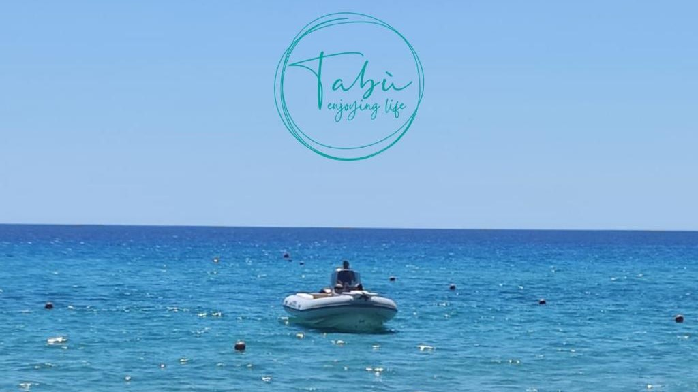
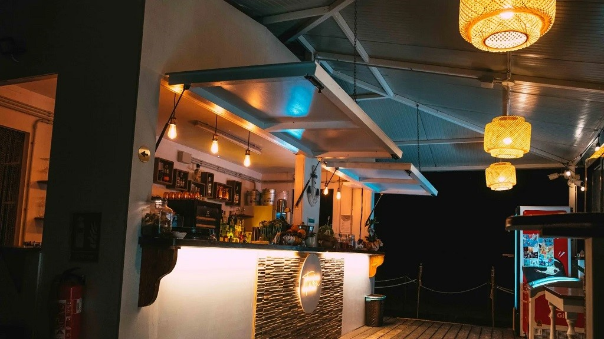

<!DOCTYPE HTML>
<!--
	Solid State by HTML5 UP
	html5up.net | @ajlkn
	Free for personal and commercial use under the CCA 3.0 license (html5up.net/license)
-->
<html>
	<head>
		<title>Generic - Solid State by HTML5 UP</title>
		<meta charset="utf-8" />
		<meta name="viewport" content="width=device-width, initial-scale=1, user-scalable=no" />
		<link rel="stylesheet" href="assets/css/main.css" />
		<noscript><link rel="stylesheet" href="assets/css/noscript.css" /></noscript>
	</head>
	<body class="is-preload">

		<!-- Page Wrapper -->
			<div id="page-wrapper">

				<!-- Header -->
					<header id="header">
						<h1><a href="index.html">Business Card</a></h1>
						<nav>
							<a href="#menu">Menu</a>
						</nav>
					</header>

				<!-- Menu -->
					<nav id="menu">
						<div class="inner">
							<h2>Menu</h2>
							 <ul class="links">
								<li><a href="index.html">Home</a></li>
								<li><a href="generic.html">Consulenza Immobiliare</a></li>
								<li><a href="generic2.html">Consulenza Tributaria</a></li>
								<li><a href="generic3.html">Consulenza N.P.L.</a></li>
								<li><a href="generic4.html">Consulenza Finanza Agevolata/PNRR</a></li>
								<li><a href="generic5.html">Progetti innovativi/Sostenibilità</a></li>
							</ul>
							<a href="#" class="close">Close</a>
						</div>
					</nav>

				<!-- Wrapper -->
					<section id="wrapper">
						<header>
							<div class="inner">
								<h2>GreenBath 4.0: Stabilimento Balneare Digitalizzato e Sostenibile</h2>
								<p>Innovazione di prodotto, servizio, processo o organizzativa: </p>
							</div>
						</header>

						<!-- Content -->
							<div class="wrapper">
								<div class="inner">

									<h3 class="major">Innovazione Prodotto:</h3>
									<p>“GreenBath 4.0”, stabilimento balneare totalmente digitalizzato e sostenibile in linea 
obiettivi di sviluppo sostenibile elencati all’interno di Agenda 2030.
Il prodotto innovativo che si intende introdurre nel mercato è uno stabilimento ecosostenibile che 
si pone l’obiettivo di arrivare ad un impatto energetico 0, ovvero zero emissioni di CO2 (0 Carbon 
– footprint) e riduzione a minimo se non annullare totalmente lo spreco di acque non 
contaminate, prevedendo impianti di riciclo e riutilizzo (0 Water – footprint). Inoltre, “GreenBath 
4.0” sarà il primo stabilimento energicamente attivo, capace di produrre energia sufficiente per 
coprire i consumi attraverso l’inserimento di pannelli fotovoltaici e sistemi di accumulo su 
ombrelloni, lettini e strutture che ne consentono l’installazione. Infine, lo stabilimento sarà ecofriendly, per ridurre al minimo l’impatto ambientale, privilegiando l’utilizzo di materiali riciclati e/o 
riciclabili, creando una zona Plastic free, impiegando pitture innovative a base biossido di titanio 
per la purificazione dell’aria insieme a sistemi di depurazione dell’acqua e di sanificazione in 
continuo all’interno delle zone di ristorazione.
Lo stabilimento “GreenBath 4.0” ambisce ad arrivare alla certificazione Legambiente.
</p>

                                    <h3 class="major">Innovazione Servizio:</h3>
									<p>“GreenBath 4.0”, stabilimento balneare totalmente digitalizzato e sostenibile in linea 
obiettivi di sviluppo sostenibile elencati all’interno di Agenda 2030.
Per ciò che concerne la transizione digitale, l’obiettivo è quello di creare un luogo totalmente 
interconnesso verso l’interno che verso l’esterno, ossia tra i vari servizi messi a disposizione dallo 
Stabilimento, quali bar, ristorante, ombrelloni, area giochi e deposito attrezzature, fino alla 
possibilità di conoscere, prenotare e pagare il proprio servizio attraverso Sito Web o Applicazione 
per Mobile, godendosi tour virtuali per vivere un’esperienza unica anche da lontano. 
 
Potrà fornire indicazioni tempestive, grazie ad una app direttamente collegata con i pubblici uffici, 
circa la qualità dell’aria, la temperatura esterna, lo stato dell’acqua, la pulizia della spiaggia, 
eventuali dinamiche di pericolo e/o rischiose per le persone, come raduni non autorizzati o eventi 
non previsti, richiedere un aiuto esterno o un intervento immediato in qualsiasi momento 
indicando il livello di urgenza della richiesta.
Lo stabilimento vuole essere un punto di riferimento anche per la popolazione locale, mettendo a 
disposizione servizi ed informazioni in e dal loco, garantendoli tutto l’anno. </p>
									
									<h3 class="major">Innovazione Processo:</h3>
									<p>“GreenBath 4.0” ha pensato ad uno stabilimento in cui il cliente ha la possibilità di vivere 
un’esperienza a 360°, in cui si può trovare sia un ambiente di relax a contatto con la natura e 
circondati da materiali non inquinanti, fare smart-working comodamente dal proprio lettino 
sfruttando le prese elettriche degli ombrelloni, che producono energia grazie ai pannelli solari 
annessi ad essi, e ricevere un percorso personalizzato, dopo un check-up iniziale, a seguito del 
quale il cliente riceverà: una dieta specifica che il ristorante si preoccuperà di rispettare per tutta 
la durata del soggiorno, un pacchetto di servizi di benessere ed estetici, come massaggi e 
trattamenti, e la partecipazione gratuita ad attività presenti presso lo stabilimento che più 
risultano idonee per quel cliente, dallo yoga, all’acquagym e così via.</p>


                                     <h3 class="major">Innovazione Organizzativa:</h3>
									<p>L’innovazione, da un punto di vista organizzativo, propone uno schema in cui tecnologia e 
sostenibilità ambientale si fondono armoniosamente insieme dando vita ad un modello 
esportabile e replicabile.</p>


                                     <h3 class="major">Strategie Produttive </h3>
									<p>Per finalizzare il progetto, e realizzare dunque gli aspetti ad oggi mancanti, sono state individuate numerose 
aziende alle quali rivolgersi sia per l’acquisto di mezzi di trasporto via terra e via mare elettrici o a idrogeno, 
sia per la fornitura di sistemi fotovoltaici da inglobare agli ombrelloni e alle sdraio presenti nello 
 
stabilimento. È stato anche individuato il software da utilizzare per la creazione di un ambiente totalmente 
digitalizzato ed interconnesso.</p>

                                      <section class="features">
										<article>
											<a href="#" class="image"></a>
											<h3 class="major">Escursioni Isole</h3>
											<p>Visita grazie al tour guidato le isole piu belle di Costa Rei.</p>										
										</article>
										<article>
											<a href="#" class="image"></a>
											<h3 class="major">Tiki Bar</h3>
											<p>Divertiti e rilassati in buona compagnia, aggiungendo il piacere di degustare un buon cocktail tiki</p>
										</article>
									 </section>


								</div>
							</div>

					</section>

				<!-- Footer -->
				<section id="footer">
						<div class="inner">
							<h2 class="major">Contattaci</h2>
							<p>Per maggiori informazioni inviare un'email al nostro team di assistenza o ai nostri contattati sotto indicati, in modo che possiamo rispondere alle vostre domande il prima possibile. Siamo sempre disponibili ad aiutare e a fornirvi tutte le informazioni di cui avete bisogno.</p>
							<form method="post" action="#">
								<div class="fields">
									<div class="field">
										<label for="name">Nome</label>
										<input type="text" name="name" id="name" />
									</div>
									<div class="field">
										<label for="email">Email</label>
										<input type="email" name="email" id="email" />
									</div>
									<div class="field">
										<label for="message">Messaggio</label>
										<textarea name="message" id="message" rows="4"></textarea>
									</div>
								</div>
								<ul class="actions">
									<li><input type="submit" value="Invia Messaggio" /></li>
								</ul>
							</form>
							<ul class="contact">
								<li class="icon solid fa-home">
									Bologna CAP: 40132<br>
									Borgo Panigale, Via.Marco Emilio Lepido 62
								</li>
								<a href="tel:+393450021709">
								<li class="icon solid fa-phone">+39 (345) 002 1709</li>
								</a>
								<li class="icon solid fa-envelope"><a href="#">consulenze.G.P@gmail.com</a></li>
								<li class="icon brands fa-whatsapp"><a href="https://wa.me/393450021709?text=Ciao">whatsapp.com/GiulianoPiroddi.</a></li>
								<li class="icon brands fa-facebook-f"><a href="#">facebook.com/GiulianoFanPage</a></li>
								<li class="icon brands fa-instagram"><a href="#">instagram.com/Consulenze/G.P</a></li>
							</ul>
							<ul class="copyright">
								<li>&copy; Untitled Inc. All rights reserved.</li><li>Design by: <a href="https://github.com/LuizRio" target="_blank">LuizRio.github</a></li>
							</ul>
						</div>
					</section>
					
				 <div class="whatsapp-icon">
              <a href="https://wa.me/393450021709" target="_blank">
               <i class="fab fa-whatsapp"></i>
             </a>
          </div>

			</div>

		<!-- Scripts -->
			<script src="assets/js/jquery.min.js"></script>
			<script src="assets/js/jquery.scrollex.min.js"></script>
			<script src="assets/js/browser.min.js"></script>
			<script src="assets/js/breakpoints.min.js"></script>
			<script src="assets/js/util.js"></script>
			<script src="assets/js/main.js"></script>

	</body>
</html>